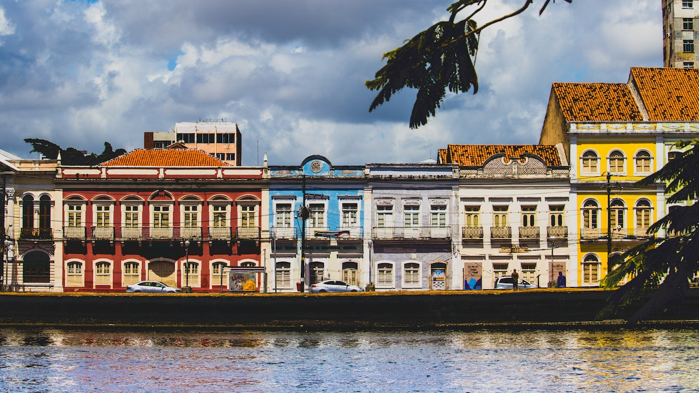

Foto de thiago japyassu
Foto de thiago japyassu
O Parque das Esculturas Francisco Brennand é um museu de arte a céu aberto localizado na cidade do Recife, capital do estado brasileiro de Pernambuco. Constitui um dos principais feitos do artista plástico pernambucano Francisco Brennand.[2]
 Imagem de Eduardo Domingos por Pixabay
Imagem de Eduardo Domingos por Pixabay
A Praça Rio Branco, também conhecida como Marco Zero, é um espaço público localizado no bairro do Recife da cidade homônima, capital de Pernambuco.[3]
Foto de thiago japyassu
A rua da Aurora é um logradouro da cidade brasileira do Recife, capital de Pernambuco. Está situada na margem esquerda do rio Capibaribe e, no seu trecho final, na margem direita do rio Beberibe. Tem este nome porque todas as suas casas são voltadas para o leste, o nascente.[4]
[1] Texto retirado do Wikipédia
[2] Texto retirado do Wikipédia
[3] Texto retirado do Wikipédia
[4] Texto retirado do Wikipédia